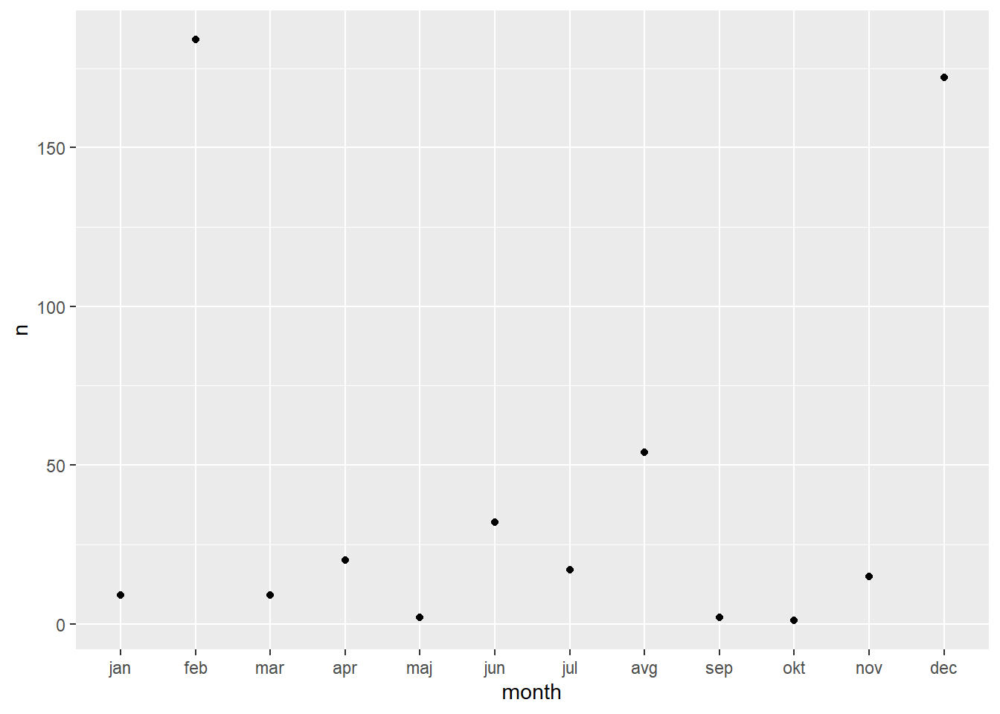
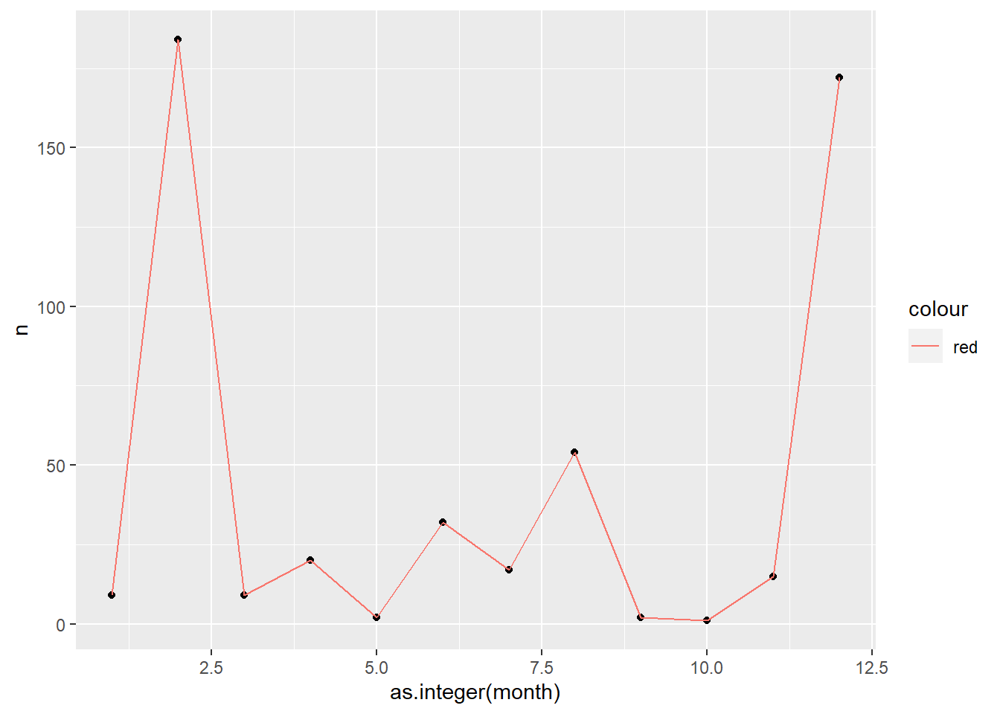
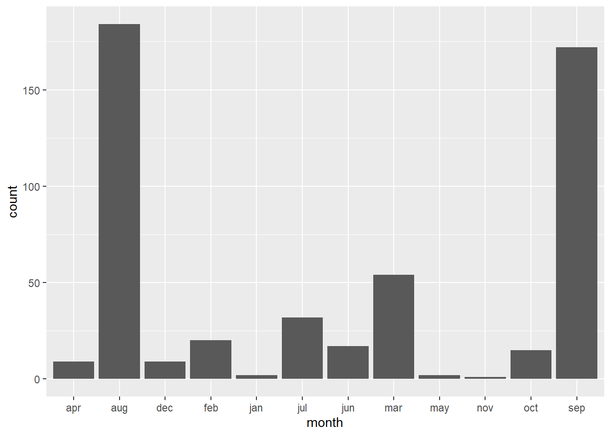
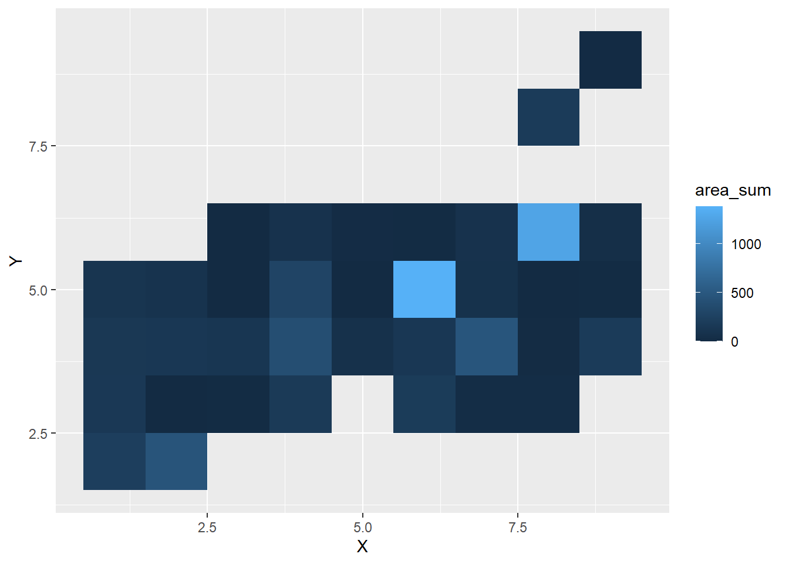
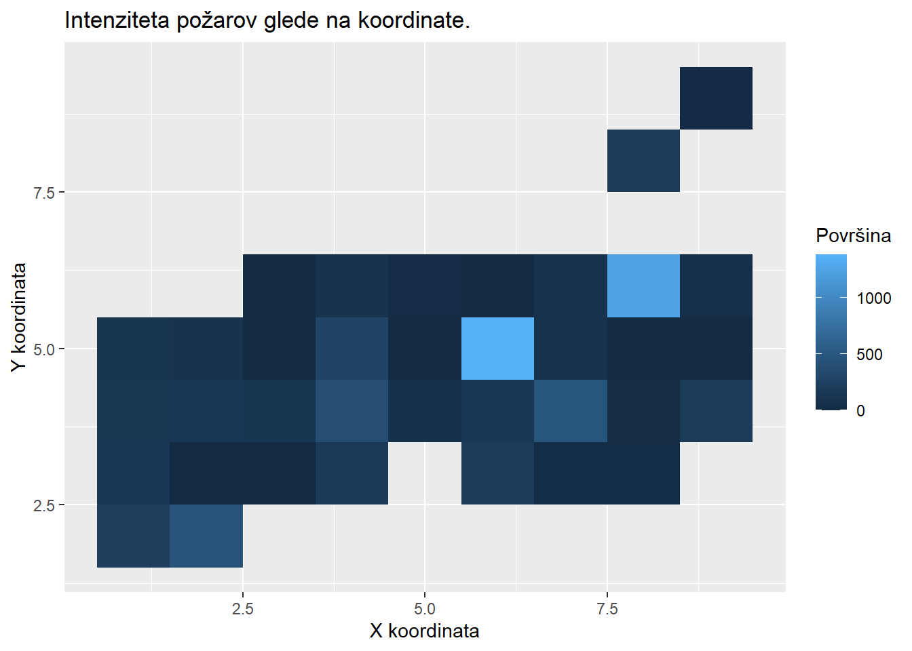
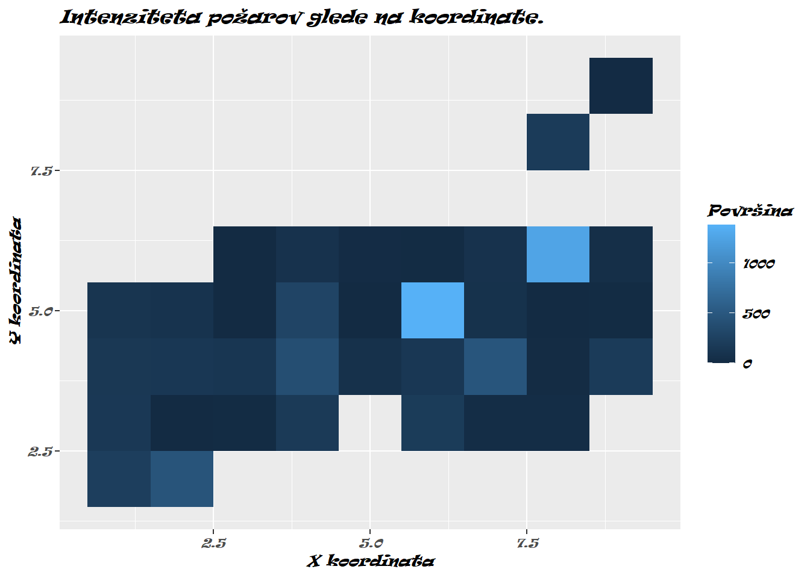

Izbrane teme
Iskanje ponovnih bolnišničnih sprejemov – dodajanje spremenljivk glede na množico pogojev
Predpostavimo, da imamo podatke o hospitalizacijah pacientov (TabelaA) in celotno bazo hospitalizacij (TabelaB). V datoteki Primer.xlsx se nahajata umetno ustvarjena primera teh dveh tabel in željen rezultat.
Tabeli A želimo dodati dva stolpca in sicer Sprejem_DA/NE tipa faktor in Trajanja_b, ki je iz spremeljivke tabele B, a le pri vrsticah, kjer je novo ustvarjena vrednost spremenljivke Sprejem_DA/NE “Da”.
Pogoji za ponoven sprejem so sledeči:
- V obeh tabelah se mora ID_ZO ujemati.
- Vrsta storitve v tabeli B mora imeti ključ 7.
- Ponovni sprejem se je moral zgoditi v 30 dneh po zaključku prvega.
Preberimo najprej obe tabeli v R. Ker sta obe tabeli na enem listu s parametroma rows in cols določimo točno območje, ki ga želimo prebrati. Nastavimo tudi detectDates = TRUE, da paket openxlsx pravilno prebere datume, drugače jih bo prebral kot cela števila. Nazadnje še spremenimo tipe spremenljivk v bolj primerne, ker so privzeto večinoma tipa niz.
library(tidyverse)
library(lubridate)
library(openxlsx)
Sys.setlocale(category = "LC_ALL", locale = "Slovenian_Slovenia.1250")## [1] "LC_COLLATE=Slovenian_Slovenia.1250;LC_CTYPE=Slovenian_Slovenia.1250;LC_MONETARY=Slovenian_Slovenia.1250;LC_NUMERIC=C;LC_TIME=Slovenian_Slovenia.1250"TabelaA <- tibble(openxlsx::read.xlsx("./data-raw/Primer.xlsx",
rows = 3:15, cols = 1:8,
detectDates = TRUE))
TabelaB <- tibble(openxlsx::read.xlsx("./data-raw/Primer.xlsx",
rows = 21:34, cols = 1:8,
detectDates = TRUE))
TabelaA <- TabelaA %>% mutate(
ID_BZ = as.integer(ID_BZ),
ID_ZO = as.integer(ID_ZO),
Vrsta.storitve = as.integer(Vrsta.storitve),
Naziv.storitve = factor(Naziv.storitve,
levels = c("NBO", "SPP", "REH", "BOL")),
Datum.začetka_a = as.Date(Datum.začetka_a),
Datum.zaključka_a = as.Date(Datum.zaključka_a),
Leto.zaključka = as.integer(Leto.zaključka),
Trajanje_a = as.double(Trajanje_a))
TabelaB <- TabelaB %>% mutate(
ID.bolnišničnega.zdravljenja = as.integer(ID.bolnišničnega.zdravljenja),
ID_ZO = as.integer(ID_ZO),
Vrsta.storitve = as.integer(Vrsta.storitve),
Naziv.storitve = factor(Naziv.storitve,
levels = c("NBO", "SPP", "REH", "BOL")),
Datum.začetka_b = as.Date(Datum.začetka_b),
Datum.zaključka_b = as.Date(Datum.zaključka_b),
Leto.zaključka.BZ = as.integer(Leto.zaključka.BZ),
Trajanja_b = as.double(Trajanja_b))
TabelaA## # A tibble: 12 x 8
## ID_BZ ID_ZO Vrsta.storitve Naziv.storitve Datum.začetka_a Datum.zaključka_a Leto.zaključka Trajanje_a
## <int> <int> <int> <fct> <date> <date> <int> <dbl>
## 1 2798353 319130 1 SPP 2020-03-13 2020-03-16 2020 3.08
## 2 3016565 322315 1 SPP 2020-09-29 2020-10-06 2020 7.19
## 3 2797632 322959 1 SPP 2020-02-28 2020-03-04 2020 5.16
## 4 2926031 325345 1 SPP 2020-06-23 2020-07-01 2020 8.09
## 5 2950619 328229 1 SPP 2020-07-24 2020-08-04 2020 11.2
## 6 2757024 329757 1 SPP 2019-12-17 2020-01-03 2020 17.2
## 7 2937061 336771 1 SPP 2020-07-23 2020-08-07 2020 5.97
## 8 2783452 337548 1 SPP 2020-02-18 2020-02-26 2020 8.06
## 9 2896543 338157 1 SPP 2020-06-08 2020-06-13 2020 5.32
## 10 2926455 340040 1 SPP 2020-07-16 2020-07-30 2020 14.1
## 11 2763834 345093 1 SPP 2020-01-28 2020-02-01 2020 4.23
## 12 2850770 345538 1 SPP 2020-05-13 2020-05-18 2020 5.1TabelaB## # A tibble: 13 x 8
## ID.bolnišničnega.zdravljenja ID_ZO Vrsta.storitve Naziv.storitve Datum.začetka_b Datum.zaključka_b Leto.zaključka.BZ Trajanja_b
## <int> <int> <int> <fct> <date> <date> <int> <dbl>
## 1 2787203 319130 7 NBO 2020-03-17 2020-02-12 2020 9
## 2 2815711 322315 7 NBO 2019-12-18 2020-03-04 2020 77
## 3 3015310 322959 7 NBO 2020-03-10 2020-03-13 2020 0
## 4 2760973 325345 7 NBO 2020-01-15 2020-01-31 2020 7
## 5 2780311 328229 7 NBO 2020-01-20 2020-02-24 2020 17
## 6 2821346 329757 7 NBO 2020-02-08 2020-03-02 2020 17
## 7 2950863 336771 7 NBO 2020-08-03 2020-08-18 2020 11
## 8 2783452 337548 1 SPP 2020-03-01 2020-03-09 2020 8.06
## 9 2896543 338157 7 SPP 2020-07-08 2020-07-18 2020 10
## 10 2926455 340040 1 SPP 2020-07-16 2020-07-30 2020 14.1
## 11 2970736 328930 7 NBO 2020-08-02 2020-09-03 2020 16
## 12 2918965 333928 3 REH 2020-06-29 2020-07-10 2020 11.1
## 13 2987891 333928 5 BOL 2020-09-09 2020-09-26 2020 16.8Pri spremenljivki Naziv.storitve smo ročno nastavili nivoje v obeh tabelah ker:
- V tabeli A ni vseh vrednosti in bi privzeto R izpustil nevidene vrednosti.
- Z ročnim vnosom zagotovimo, da so tudi vrednosti faktorjev v obeh tabelah enake.
Sedaj, ko smo prebrali podatke, najprej samo poiščimo vrstice, katere ustrezajo pogojem za ponovni sprejem.
RazsirjenA <- inner_join(TabelaA, TabelaB, by = "ID_ZO",
suffix = c("", "_b"))
RazsirjenA <- RazsirjenA %>%
filter(Vrsta.storitve_b == 7) %>%
filter(Datum.zaključka_a < Datum.začetka_b,
Datum.začetka_b < Datum.zaključka_a + days(30))
RazsirjenA## # A tibble: 3 x 15
## ID_BZ ID_ZO Vrsta.storitve Naziv.storitve Datum.začetka_a Datum.zaključka_a Leto.zaključka Trajanje_a ID.bolnišničnega.zdra~ Vrsta.storitve_b Naziv.storitve_b
## <int> <int> <int> <fct> <date> <date> <int> <dbl> <int> <int> <fct>
## 1 2798353 319130 1 SPP 2020-03-13 2020-03-16 2020 3.08 2787203 7 NBO
## 2 2797632 322959 1 SPP 2020-02-28 2020-03-04 2020 5.16 3015310 7 NBO
## 3 2896543 338157 1 SPP 2020-06-08 2020-06-13 2020 5.32 2896543 7 SPP
## # ... with 4 more variables: Datum.začetka_b <date>, Datum.zaključka_b <date>, Leto.zaključka.BZ <int>, Trajanja_b <dbl>Najprej smo tabeli združili po vrednosti ID_ZO. Tukaj smo uporabili še parameter suffix, da smo ohranili prvotna imena iz tabele A, tabeli B pa dodali "_b". Ostala dva pogoja smo implementirali s funkcijo filter. V tabeli RazsirjenA, so sedaj v stolpcu ID_BZ vrednosti, pri katerih moramo dodati ponovni sprejem. Tukaj predpostavljamo, da je to primarni ključ.
V zadnjem koraku originalni tabeli A v dveh korakih dodamo manjkajoči spremenljivki.
#Dodajmo sprejeme.
TabelaA <- TabelaA %>%
mutate("Sprejem_DA/NE" = factor(ID_BZ %in% RazsirjenA$ID_BZ,
levels = c(TRUE, FALSE),
labels = c("Da", "Ne")))
#Dodajmo trajanja_b.
left_join(TabelaA, RazsirjenA %>%
select(ID_ZO, Trajanja_b), by = "ID_ZO", suffix = c("", "")) %>%
mutate(Trajanja_b = replace_na(Trajanja_b, 0)) %>%
select(ID_BZ, ID_ZO, "Sprejem_DA/NE", Trajanja_b)## # A tibble: 12 x 4
## ID_BZ ID_ZO `Sprejem_DA/NE` Trajanja_b
## <int> <int> <fct> <dbl>
## 1 2798353 319130 Da 9
## 2 3016565 322315 Ne 0
## 3 2797632 322959 Da 0
## 4 2926031 325345 Ne 0
## 5 2950619 328229 Ne 0
## 6 2757024 329757 Ne 0
## 7 2937061 336771 Ne 0
## 8 2783452 337548 Ne 0
## 9 2896543 338157 Da 10
## 10 2926455 340040 Ne 0
## 11 2763834 345093 Ne 0
## 12 2850770 345538 Ne 0Pri prvem delu uporabljamo operator %in% za delo z množicami in preverimo ali je ID_BZ tabele A v izbranih vrsticah tabele RazsirjenA. Na koncu z levim združevanjem dodamo še vrednosti trajanja_b iz tabele B in izpišemo okrajšan rezultat. Za izpis točno željene tabele je potrebno le spremeniti zadnji select in podatke shraniti nazaj v tabelo A.
Urejanje kumulativne razpredelnice
Iz repozitorija slovenskega COVID sledilnika (https://github.com/sledilnik/data) prenesemo podatke o kumulativnem številu okuženih glede na spol in starostno kategorijo (age-cases.csv). Preberimo datoteko v našo sejo R:
library(tidyverse)
df <- read_csv("./data-raw/age-cases.csv")
df## # A tibble: 469 x 45
## date `age.male.0-4.tod~ `age.male.5-14.to~ `age.male.15-24.t~ `age.male.25-34.t~ `age.male.35-44.t~ `age.male.45-54.t~ `age.male.55-64.~ `age.male.65-74.~
## <date> <dbl> <dbl> <dbl> <dbl> <dbl> <dbl> <dbl> <dbl>
## 1 2020-03-04 NA NA NA NA NA NA 1 NA
## 2 2020-03-05 NA NA NA 2 1 NA 1 1
## 3 2020-03-06 NA NA NA 2 1 1 3 1
## 4 2020-03-07 NA NA NA 4 1 1 3 1
## 5 2020-03-08 NA NA NA 4 1 1 4 2
## 6 2020-03-09 NA NA 1 5 1 1 5 4
## 7 2020-03-10 NA NA 1 6 2 2 7 5
## 8 2020-03-11 NA 1 2 10 5 5 9 6
## 9 2020-03-12 NA 5 5 18 9 9 15 6
## 10 2020-03-13 NA 5 8 21 10 16 15 10
## # ... with 459 more rows, and 36 more variables: age.male.75-84.todate <dbl>, age.male.85+.todate <dbl>, age.male.todate <dbl>, age.female.0-4.todate <dbl>,
## # age.female.5-14.todate <dbl>, age.female.15-24.todate <dbl>, age.female.25-34.todate <dbl>, age.female.35-44.todate <dbl>, age.female.45-54.todate <dbl>,
## # age.female.55-64.todate <dbl>, age.female.65-74.todate <dbl>, age.female.75-84.todate <dbl>, age.female.85+.todate <dbl>, age.female.todate <dbl>,
## # age.unknown.0-4.todate <lgl>, age.unknown.5-14.todate <lgl>, age.unknown.15-24.todate <dbl>, age.unknown.25-34.todate <dbl>, age.unknown.35-44.todate <dbl>,
## # age.unknown.45-54.todate <dbl>, age.unknown.55-64.todate <dbl>, age.unknown.65-74.todate <lgl>, age.unknown.75-84.todate <lgl>, age.unknown.85+.todate <lgl>,
## # age.unknown.todate <dbl>, age.0-4.todate <dbl>, age.5-14.todate <dbl>, age.15-24.todate <dbl>, age.25-34.todate <dbl>, age.35-44.todate <dbl>,
## # age.45-54.todate <dbl>, age.55-64.todate <dbl>, age.65-74.todate <dbl>, age.75-84.todate <dbl>, age.85+.todate <dbl>, age.todate <dbl>Opazimo, da so podatki shranjeni v zelo široki razpredelnici. Vsak stolpec v bistvu hrani 2 spremenljivki – spol in starost. Pretvorimo podatke v urejeno obliko. Začnimo s pretvorbo v daljšo obliko:
df_tidy <- df %>%
pivot_longer(cols = starts_with("age"), values_to = "cumulative")
df_tidy## # A tibble: 20,636 x 3
## date name cumulative
## <date> <chr> <dbl>
## 1 2020-03-04 age.male.0-4.todate NA
## 2 2020-03-04 age.male.5-14.todate NA
## 3 2020-03-04 age.male.15-24.todate NA
## 4 2020-03-04 age.male.25-34.todate NA
## 5 2020-03-04 age.male.35-44.todate NA
## 6 2020-03-04 age.male.45-54.todate NA
## 7 2020-03-04 age.male.55-64.todate 1
## 8 2020-03-04 age.male.65-74.todate NA
## 9 2020-03-04 age.male.75-84.todate NA
## 10 2020-03-04 age.male.85+.todate NA
## # ... with 20,626 more rowsNaslednji korak je, da stolpec name razdružimo. Izgleda, kot da je ločitveni znak pika, torej uporabimo za separator \\., saj razdružujemo z regularnim izrazom:
df_tidy <- df %>%
pivot_longer(cols = starts_with("age"), values_to = "cumulative") %>%
separate(name, into = c("delete1", "sex", "age", "delete2"), "\\.")## Warning: Expected 4 pieces. Missing pieces filled with `NA` in 6566 rows [11, 22, 33, 34, 35, 36, 37, 38, 39, 40, 41, 42, 43, 44, 55, 66, 77, 78, 79, 80, ...].df_tidy## # A tibble: 20,636 x 6
## date delete1 sex age delete2 cumulative
## <date> <chr> <chr> <chr> <chr> <dbl>
## 1 2020-03-04 age male 0-4 todate NA
## 2 2020-03-04 age male 5-14 todate NA
## 3 2020-03-04 age male 15-24 todate NA
## 4 2020-03-04 age male 25-34 todate NA
## 5 2020-03-04 age male 35-44 todate NA
## 6 2020-03-04 age male 45-54 todate NA
## 7 2020-03-04 age male 55-64 todate 1
## 8 2020-03-04 age male 65-74 todate NA
## 9 2020-03-04 age male 75-84 todate NA
## 10 2020-03-04 age male 85+ todate NA
## # ... with 20,626 more rowsDobimo opozorilo. Preverimo v čem je težava, tako da si s funkcijo View() ogledamo celoten tibble. V 11. vrstici opazimo prvo težavo, v stolpcu age imamo vrednost todate. Zakaj je do tega prišlo? Poglejmo imena stolpcev izvirne razpredelnice:
colnames(df)## [1] "date" "age.male.0-4.todate" "age.male.5-14.todate" "age.male.15-24.todate" "age.male.25-34.todate"
## [6] "age.male.35-44.todate" "age.male.45-54.todate" "age.male.55-64.todate" "age.male.65-74.todate" "age.male.75-84.todate"
## [11] "age.male.85+.todate" "age.male.todate" "age.female.0-4.todate" "age.female.5-14.todate" "age.female.15-24.todate"
## [16] "age.female.25-34.todate" "age.female.35-44.todate" "age.female.45-54.todate" "age.female.55-64.todate" "age.female.65-74.todate"
## [21] "age.female.75-84.todate" "age.female.85+.todate" "age.female.todate" "age.unknown.0-4.todate" "age.unknown.5-14.todate"
## [26] "age.unknown.15-24.todate" "age.unknown.25-34.todate" "age.unknown.35-44.todate" "age.unknown.45-54.todate" "age.unknown.55-64.todate"
## [31] "age.unknown.65-74.todate" "age.unknown.75-84.todate" "age.unknown.85+.todate" "age.unknown.todate" "age.0-4.todate"
## [36] "age.5-14.todate" "age.15-24.todate" "age.25-34.todate" "age.35-44.todate" "age.45-54.todate"
## [41] "age.55-64.todate" "age.65-74.todate" "age.75-84.todate" "age.85+.todate" "age.todate"Opazimo, da niso vsi stolpci ločeni s 3 pikami. Imamo tudi stolpce, ki povzemajo. Na primer, age.male.todate vsebuje vsoto vseh okuženih moških do nekega datuma, torej je vsota stolpcev. V urejenih podatkih ne želimo povzemanj, saj ne želimo mešati posameznih podatkov in njihovih vsot. Povzemanja lahko kasneje izračunamo sami. Zadevo rešimo tako, da iz stolpca name v daljši obliki izberemo samo tiste stolpce, ki vsebujejo 3 pike, pri čemer imamo okoli pike vedno nek tekst. Uporabimo str_detect() in regularne izraze:
df_tidy <- df %>%
pivot_longer(cols = starts_with("age"), values_to = "cumulative") %>%
filter(str_detect(name, "[:alpha:]*\\.[:alpha:]*\\.[0-9-]*\\.[:alpha:]*")) %>%
separate("name", into = c("delete1", "sex", "age", "delete2"), sep = "\\.") %>%
select(date, sex, age, cumulative)
df_tidy## # A tibble: 12,663 x 4
## date sex age cumulative
## <date> <chr> <chr> <dbl>
## 1 2020-03-04 male 0-4 NA
## 2 2020-03-04 male 5-14 NA
## 3 2020-03-04 male 15-24 NA
## 4 2020-03-04 male 25-34 NA
## 5 2020-03-04 male 35-44 NA
## 6 2020-03-04 male 45-54 NA
## 7 2020-03-04 male 55-64 1
## 8 2020-03-04 male 65-74 NA
## 9 2020-03-04 male 75-84 NA
## 10 2020-03-04 female 0-4 NA
## # ... with 12,653 more rowsSpremenimo manjkajoče vrednosti v 0:
df_tidy <- df %>%
pivot_longer(cols = starts_with("age"), values_to = "cumulative") %>%
filter(str_detect(name, "[:alpha:]*\\.[:alpha:]*\\.[0-9-]*\\.[:alpha:]*")) %>%
separate("name", into = c("delete1", "sex", "age", "delete2"), sep = "\\.") %>%
select(date, sex, age, cumulative) %>%
mutate(cumulative = replace_na(cumulative, 0))
df_tidy## # A tibble: 12,663 x 4
## date sex age cumulative
## <date> <chr> <chr> <dbl>
## 1 2020-03-04 male 0-4 0
## 2 2020-03-04 male 5-14 0
## 3 2020-03-04 male 15-24 0
## 4 2020-03-04 male 25-34 0
## 5 2020-03-04 male 35-44 0
## 6 2020-03-04 male 45-54 0
## 7 2020-03-04 male 55-64 1
## 8 2020-03-04 male 65-74 0
## 9 2020-03-04 male 75-84 0
## 10 2020-03-04 female 0-4 0
## # ... with 12,653 more rowsPreostane nam še pretvorba kumulativnih podatkov v dnevne. Trenutno imamo za vsako kombinacijo spola in starosti podano vsoto okuženih do tistega datuma, na primer:
df_tmp <- filter(df_tidy, sex == "female", age == "25-34")
df_tmp$cumulative## [1] 0 0 1 3 3 5 8 15 19 22 26 28 30 31 35 38 39 40 44 46 49 51 52 54 55 56
## [27] 60 63 67 71 72 73 74 77 81 86 90 94 95 95 97 99 101 103 103 106 106 106 107 107 108 109
## [53] 109 110 110 111 112 112 112 112 112 114 114 114 114 115 115 115 115 115 115 115 115 115 115 115 115 115
## [79] 115 115 115 116 116 116 116 116 116 116 116 116 116 116 117 118 118 118 118 119 119 120 120 120 120 120
## [105] 120 121 121 122 122 122 124 125 125 125 127 127 127 128 129 132 135 137 142 142 146 148 148 149 151 153
## [131] 153 153 155 158 159 160 161 161 162 164 167 168 169 170 171 172 173 175 177 180 180 180 180 181 181 181
## [157] 181 181 182 183 187 192 193 196 196 196 201 205 209 210 211 214 216 218 220 224 226 228 230 231 234 236
## [183] 239 246 250 254 257 261 269 279 285 297 308 313 326 333 341 354 358 374 375 383 398 406 426 442 455 461
## [209] 475 489 503 517 539 556 560 566 601 632 665 694 727 739 767 817 886 956 1025 1086 1123 1201 1323 1454 1608 1771
## [235] 1915 2001 2121 2360 2588 2743 2868 3001 3046 3127 3293 3424 3544 3658 3720 3767 3856 4029 4180 4309 4440 4524 4570 4690 4827 4990
## [261] 5103 5253 5348 5400 5508 5708 5850 5981 6109 6205 6256 6339 6511 6656 6798 6935 7028 7074 7216 7393 7588 7725 7884 7957 7991 8109
## [287] 8289 8426 8572 8693 8790 8823 8942 9121 9314 9466 9490 9543 9594 9783 9975 10198 10345 10388 10450 10523 10770 11075 11304 11470 11634 11678
## [313] 11716 11869 12032 12172 12286 12411 12457 12478 12637 12759 12890 13011 13134 13178 13206 13334 13476 13597 13692 13809 13853 13887 14014 14115 14221 14310
## [339] 14402 14447 14474 14498 14638 14782 14868 14952 14985 15009 15068 15142 15208 15265 15342 15388 15413 15479 15563 15622 15687 15746 15784 15806 15869 15943
## [365] 16017 16070 16134 16160 16173 16214 16272 16336 16398 16459 16504 16517 16586 16651 16712 16764 16829 16872 16898 16955 17025 17116 17196 17267 17290 17310
## [391] 17401 17501 17602 17688 17762 17814 17831 17848 17931 18044 18112 18200 18243 18263 18342 18433 18485 18534 18579 18615 18634 18686 18769 18829 18904 18965
## [417] 18995 19012 19074 19101 19165 19236 19304 19337 19348 19435 19513 19580 19635 19675 19701 19713 19758 19817 19865 19908 19940 19968 19982 20026 20052 20080
## [443] 20098 20128 20141 20151 20170 20205 20233 20252 20277 20286 20290 20316 20339 20357 20375 20390 20399 20399 20409 20434 20453 20460 20471 20477 20478 20485
## [469] 20494Kako pretvoriti kumulativne podatke v dnevne? Kumulativnemu vektor moramo enostavno odšteti enak vektor, premaknjen za en korak naprej. Na primer:
x_cum <- c(1, 5, 6, 7)
x_dly <- x_cum - c(0, x_cum[1:3])
x_cum## [1] 1 5 6 7x_dly## [1] 1 4 1 1V R imamo za to funkcijo diff:
x_cum <- c(1, 5, 6, 7)
x_dly <- c(x_cum[1], diff(x_cum))
x_cum## [1] 1 5 6 7x_dly## [1] 1 4 1 1Uporabimo sedaj to funkcijo, da dobimo dnevne podatke. Pri tem moramo biti pozorni, da so kumulativne vrednosti podane za vsak spol in starost posebej. Torej moramo podatke tudi grupirati:
df_tidy <- df %>%
pivot_longer(cols = starts_with("age"), values_to = "cumulative") %>%
filter(str_detect(name, "[:alpha:]*\\.[:alpha:]*\\.[0-9-]*\\.[:alpha:]*")) %>%
separate("name", into = c("delete1", "sex", "age", "delete2"), sep = "\\.") %>%
select(date, sex, age, cumulative) %>%
mutate(cumulative = replace_na(cumulative, 0)) %>%
group_by(sex, age) %>%
mutate(daily = c(cumulative[1], diff(cumulative)))
df_tidy## # A tibble: 12,663 x 5
## # Groups: sex, age [27]
## date sex age cumulative daily
## <date> <chr> <chr> <dbl> <dbl>
## 1 2020-03-04 male 0-4 0 0
## 2 2020-03-04 male 5-14 0 0
## 3 2020-03-04 male 15-24 0 0
## 4 2020-03-04 male 25-34 0 0
## 5 2020-03-04 male 35-44 0 0
## 6 2020-03-04 male 45-54 0 0
## 7 2020-03-04 male 55-64 1 1
## 8 2020-03-04 male 65-74 0 0
## 9 2020-03-04 male 75-84 0 0
## 10 2020-03-04 female 0-4 0 0
## # ... with 12,653 more rowsdf_tidy %>%
filter(sex == "female", age == "25-34")## # A tibble: 469 x 5
## # Groups: sex, age [1]
## date sex age cumulative daily
## <date> <chr> <chr> <dbl> <dbl>
## 1 2020-03-04 female 25-34 0 0
## 2 2020-03-05 female 25-34 0 0
## 3 2020-03-06 female 25-34 1 1
## 4 2020-03-07 female 25-34 3 2
## 5 2020-03-08 female 25-34 3 0
## 6 2020-03-09 female 25-34 5 2
## 7 2020-03-10 female 25-34 8 3
## 8 2020-03-11 female 25-34 15 7
## 9 2020-03-12 female 25-34 19 4
## 10 2020-03-13 female 25-34 22 3
## # ... with 459 more rowsUrejene podatke še shranimo v mapo data-clean:
dir.create("./data-clean/") # Če še ni mape data-clean jo ustvarimo.
write_csv2(df_tidy, "./data-clean/age-cases-tidy.csv")Osnove grafov z ggplot2
Osnovni paket v tidyverse je ggplot2, ki je namenjen izrisovanju grafov. Paket ggplot2 implementira sistematičen formalni jezik za opisovanje grafov. To naredi paket dosti bolj zmogljiv, vendar na videz tudi bolj zahtevnega.
Osnovna funkcija za izris grafov je ggplot(). Ta že sama po sebi izriše prazen graf.
ggplot()
Če želimo dejanski izris grafa podatkov pa moramo podati še tri ključne elemente:
- Podatke.
- Tip grafa – Kako naj bodo podatki predstavljeni na grafu, lahko jih podamo tudi več.
- Estetike – x-os, y-os, barve točk, skupine podatkov, itd.
Poglejmo si različne osnovne grafe na podatkih portugalskih požarov.
pozari <- read_csv2("./data-raw/forest-fires.csv")
pozari## # A tibble: 517 x 13
## X Y month day FFMC_index DMC_index DC_index ISI_index temp RH wind rain area
## <dbl> <dbl> <chr> <chr> <dbl> <dbl> <dbl> <dbl> <dbl> <dbl> <dbl> <dbl> <dbl>
## 1 7 5 mar fri 86.2 26.2 94.3 5.1 8.2 51 6.7 0 0
## 2 7 4 oct tue 90.6 35.4 669. 6.7 18 33 0.9 0 0
## 3 7 4 oct sat 90.6 43.7 687. 6.7 14.6 33 1.3 0 0
## 4 8 6 mar fri 91.7 33.3 77.5 9 8.3 97 4 0.2 0
## 5 8 6 mar sun 89.3 51.3 102. 9.6 11.4 99 1.8 0 0
## 6 8 6 aug sun 92.3 85.3 488 14.7 22.2 29 5.4 0 0
## 7 8 6 aug mon 92.3 88.9 496. 8.5 24.1 27 3.1 0 0
## 8 8 6 aug mon 91.5 145. 608. 10.7 8 86 2.2 0 0
## 9 8 6 sep tue 91 130. 693. 7 13.1 63 5.4 0 0
## 10 7 5 sep sat 92.5 88 699. 7.1 22.8 40 4 0 0
## # ... with 507 more rowsIzrišimo najprej število požarov glede na posamezen mesec. Tukaj smo pretvorili mesece v ordinalno spremenljivko, da bo tudi izpis avtomatsko urejen po mesecih.
pozari_per_m <- pozari %>%
mutate(month = factor(month, labels = c("jan", "feb", "mar", "apr",
"maj", "jun", "jul", "avg",
"sep", "okt", "nov", "dec"),
ordered = T)) %>% count(month)
ggplot(pozari_per_m, aes(x = month, y = n)) +
geom_point()
Tip grafa podamo z eno izmed družine funkcij geom_. Lahko podamo tudi več geomov, če so le-ti kompatibilni. Posebej tudi dodajamo estetike. Dodajmo še rdečo črto.
ggplot(pozari_per_m, aes(x = as.integer(month), y = n)) +
geom_point() +
geom_line(aes(colour = "red"))
Zgornje podatke bi lahko izrisali tudi v obliki stolpičnega diagrama s funkcijo geom_bar(), ki pa že implicitno prešteje število vrstic za vsako vrednost x-a.
ggplot(pozari, aes(x = month)) + geom_bar()
Naredimo še vročinski (heat) diagram.
pozari_xy <- pozari %>%
group_by(X, Y) %>%
mutate(area_sum = sum(area))
ggplot(pozari_xy, aes(x = X, y = Y, fill = area_sum)) +
geom_tile()
Spreminjanje fontov na grafu
Dodajmo bolj opisna imena osi grafov in naslov.
pozari_xy <- pozari %>%
group_by(X, Y) %>%
mutate(area_sum = sum(area))
ggplot(pozari_xy, aes(x = X, y = Y, fill = area_sum)) +
geom_tile() +
labs(x = "X koordinata", y = "Y koordinata",
title = "Intenziteta požarov glede na koordinate.",
fill = "Površina")
Da spremenimo pisavo je v R najprej potrebno naložiti nove pisave. Nekaj pisav je že nameščenih, katere lahko vidimo s funkcijo windowsFonts().
head(windowsFonts())## $serif
## [1] "TT Times New Roman"
##
## $sans
## [1] "TT Arial"
##
## $mono
## [1] "TT Courier New"Pri prvem poganjanju so ponavadi na OS Windows na voljo le tri pisave. Da namestimo še ostale pisave uporabimo paket extrafont. Da paket naloži vse pisave uporabimo font_import(). To funkcijo poženemo samo enkrat, nalaganje pa lahko traja nekaj minut. Nato v R-ju naložime fonte z loadfonts(device = "win"), ki naloži vse pisave, ki jih najde na sistemu.
library(extrafont)
#font_import() # Naloži vse pisave, ki jih dobi.
loadfonts(device = "win", quiet = TRUE)
cat(str_c("Stevilo najdenih pisav: ", length(windowsFonts())))## Stevilo najdenih pisav: 207Izrišimo sedaj graf s pisavo ‘Ravie’:
pozari_xy <- pozari %>%
group_by(X, Y) %>%
mutate(area_sum = sum(area))
ggplot(pozari_xy, aes(x = X, y = Y, fill = area_sum)) +
geom_tile() +
labs(x = "X koordinata", y = "Y koordinata",
title = "Intenziteta požarov glede na koordinate.",
fill = "Površina") +
theme(text=element_text(size=9, family="Ravie", face = "italic"))
Shranjevanje grafov
S funkcijo ggsave() iz knjižnice ggplot2 lahko grafe tipa ggplot shranimo v enem izmed popularnih formatov. Dobra praksa dela z grafi je, da jih najprej shranimo v spremenljivko. Nato jih lahko izrišemo ali njihovo podobo shranimo v datoteko:
graf <- ggplot(pozari_xy, aes(x = X, y = Y, fill = area_sum)) +
geom_tile()
dir.create("./data-plots/")
ggsave("./data-plots/graf.jpg", plot = graf, width = 4, height = 3, dpi = 300)
ggsave("./data-plots/graf.png", width = 4, height = 3, dpi = 300)
ggsave("./data-plots/graf.pdf", width = 4, height = 3, dpi = 300)
getwd()## [1] "C:/Users/Gregor/Documents/shared_files/workshops/urejanje-podatkov/izbrane-teme"Funkcija ggsave() bo iz končnice sama zaznala željeni format shranjevanja in primerno shranila graf v datoteko.
Za shranjevanje osnovnih R-jevih grafov, pa lahko preusmerite izrise v datoteko. Shranimo preprost graf v png sliko.
getwd()## [1] "C:/Users/Gregor/Documents/shared_files/workshops/urejanje-podatkov/izbrane-teme"png("./data-plots/grafR.png")
plot(pozari$temp, type = "l", col = "blue")
lines(pozari$wind, type = "l", col = "red")
dev.off() # Povrnemo izrise nazaj v R.## png
## 2Izrisujemo lahko tudi v pdf datoteke, kjer bo vsak graf izrisan na svojo stran. Grafi so v pdf datoteki shranjeni vektorsko.
pdf("./data-plots/grafR.pdf")
plot(pozari$temp, type = "l", col = "blue")
lines(pozari$wind, type = "l", col = "red")
plot(pozari$wind, type = "l", col = "red")
dev.off() # Povrnemo izrise nazaj v R.## png
## 2Paket data.table
Včasih se srečamo s podatkovnimi množicami, ki imajo veliko število zapisov, na primer milijon, 100 milijonov, ali več. Največja omejitev za delo z velikimi podatkovnimi množicami v R je velikost pomnilnika (ang. memory, RAM), saj R vse podatke hrani v pomnilniku. Za primer, numerični vektor dolžine 100 milijonov zasede 800 MB prostora. V kolikor nam pomnilnik dopušča uporabo podatkov, je naslednja ovira čas procesiranja posameznih operacij. V takšnih primerih je smiselno uporabiti programsko opremo (oziroma pakete), ki so namensko razviti za delo z večjo količino podatkov. V R je temu namenjen paket data.table. V tem paketu obstaja objekt data.table, ki je drugačna različica data.frame. Data table ima tri dimenzije data.table[i, j, by]:
iIzbira vrstic in urejanje glede na vrednosti v stolpcih. V dplyr sta za to na voljo glagolafilter()inarrange().jIzbira stolpcev, spreminjanje vrednosti stolpcev in povzemanje. V dplyr so za to na voljo glagoliselect(),mutate()insummarise().byKako združimo podatke pri operacijah. V dplyr je za to na voljo glagolgroup_by().
Paketa data.table ne bomo spoznali podrobneje, v kolikor želite več informacij predlagamo ta uvod v paket: https://cran.r-project.org/web/packages/data.table/vignettes/datatable-intro.html. Za diskusijo o razlikah, prednostih in slabostih obeh paketov (dplyr in data.table) predlagamo ogled tega vprašanja (in odgovorov): https://stackoverflow.com/questions/21435339/data-table-vs-dplyr-can-one-do-something-well-the-other-cant-or-does-poorly.
Vsekakor takšnih podatkovnih množic ne smemo zamenjati z velepodatki (big data), kjer so množice tako velike, da standardna programska oprema za delo s podatki z njimi ni zmožna delati. V takih primerih se poslužimo programske opreme za velepodatke, kot so, na primer, Hadoop, MongoDB, Apache Spark, itd.
Paket dplyr lahko razširimo s paketom dtplyr (https://github.com/tidyverse/dtplyr), ki ga namestimo z ukazom install.packages(dtplyr). Ta nam omogoča uporabo sintakse paketa dplyr, z učinkovitostjo paketa data.table. To naredi tako, da v ozadju dplyr kodo prevede v data.table kodo. Sicer vseeno deluje nekoliko počasneje kot data.table, ampak je razlika večinoma zanemarljiva.
Poglejmo si preprost primer, kjer generiramo podatke in na njih izvedemo nekaj operacij. Zadevo bomo naredili v dplyr, data.table in dtplyr ter sočasno merili čas izvajanja operacij. Tudi data.table dopušča uporabo operatorja pipe. V paketu dtplyr imamo funkcijo lazy_dt() katera omogoči t. i. leno ovrednotenje (lazy evaluation). V dplyr se opreacije izvajajo požrešno, ena za drugo, kot so zapisane. Leno ovrednotenje pa omogoča, da se operacije ne izvedejo, dokler na koncu ne kličemo funkcije as_tibble(). To omogoča veliko hitrejšo izvedbo.
library(data.table)
library(dtplyr)
# Generirani podatki, da lahko poljubno nastavimo število primerov. ------------
n <- 100000000
x <- rnorm(n)
price <- rnorm(n, 5000, 100)
all_types <- apply(expand.grid(LETTERS, LETTERS, 0:9), 1, paste, collapse=".")
types <- sample(all_types, n, replace = T)
tib_dplyr <- tibble(x = x, price = price, type = types)
dt_dtplyr <- lazy_dt(data.table::data.table(x = x, price = price,
type = types))
dt_dtable <- data.table::data.table(x = x, price = price, type = types)
# dplyr ------------------------------------------------------------------------
t1 <- Sys.time()
tib_dplyr %>%
group_by(type) %>%
summarise(mean_price = mean(price))## # A tibble: 6,760 x 2
## type mean_price
## <chr> <dbl>
## 1 A.A.0 4999.
## 2 A.A.1 5001.
## 3 A.A.2 4998.
## 4 A.A.3 5000.
## 5 A.A.4 5000.
## 6 A.A.5 4999.
## 7 A.A.6 5000.
## 8 A.A.7 4999.
## 9 A.A.8 5000.
## 10 A.A.9 5002.
## # ... with 6,750 more rowst2 <- Sys.time()
t2 - t1## Time difference of 12.24985 secs# data.table -------------------------------------------------------------------
t1 <- Sys.time()
dt_dtable[, sum(price), keyby=type]## type V1
## 1: A.A.0 74301633
## 2: A.A.1 74261489
## 3: A.A.2 75041587
## 4: A.A.3 74208535
## 5: A.A.4 73933456
## ---
## 6756: Z.Z.5 73947906
## 6757: Z.Z.6 74580987
## 6758: Z.Z.7 74086744
## 6759: Z.Z.8 73811624
## 6760: Z.Z.9 74098284t2 <- Sys.time()
t2 - t1## Time difference of 4.883885 secs# dtplyr -----------------------------------------------------------------------
t1 <- Sys.time()
dt_dtplyr %>%
group_by(type) %>%
summarise(mean_price = mean(price)) %>%
as_tibble()## # A tibble: 6,760 x 2
## type mean_price
## <chr> <dbl>
## 1 A.A.0 4999.
## 2 A.A.1 5001.
## 3 A.A.2 4998.
## 4 A.A.3 5000.
## 5 A.A.4 5000.
## 6 A.A.5 4999.
## 7 A.A.6 5000.
## 8 A.A.7 4999.
## 9 A.A.8 5000.
## 10 A.A.9 5002.
## # ... with 6,750 more rowst2 <- Sys.time()
t2 - t1## Time difference of 4.266872 secsOpazimo, da dtplyr in data.table delujeta veliko hitreje kot dplyr. Koliko hitreje je odvisno od večih parametrov, na primer, koliko podatkov imamo, koliko različnih skupin v združevanju, katere operacije izvajamo in podobno. Za bolj podrobno časovno primerjavo predlagamo obisk strani https://github.com/Rdatatable/data.table/wiki/Benchmarks-%3A-Grouping in https://iyarlin.github.io/2020/05/26/dtplyr_benchmarks/.
Še ena primerjava kode med paketi, ki pa je v knjigi ne bomo izvedli, zaradi nekoliko večje časovne zahtevnosti:
# dplyr ------------------------------------------------------------------------
t1 <- Sys.time()
tib_dplyr %>%
filter(x < 2) %>%
group_by(type) %>%
mutate(price_stand = (price - mean(price)) / sd(price)) %>%
summarize(mean_price_stand = mean(price_stand))
t2 <- Sys.time()
t2 - t1
# data.table -------------------------------------------------------------------
t1 <- Sys.time()
dt_dtable %>%
.[x < 2] %>%
.[ , price_stand := (price - mean(price)) / sd(price), by = type] %>%
.[ , .(mean_price_stand = mean(price_stand)), keyby = type]
t2 <- Sys.time()
t2 - t1
# dtplyr -----------------------------------------------------------------------
t1 <- Sys.time()
dt_dtplyr %>%
filter(x < 2) %>%
group_by(type) %>%
mutate(price_stand = (price - mean(price)) / sd(price)) %>%
summarize(mean_price_stand = mean(price_stand)) %>%
as_tibble() # To vrstico moramo zapisati, v koliko želimo da se ukaz izvede!
t2 <- Sys.time()
t2 - t1Povezava med R in podatkovnimi bazami
Pogosto podatke pridobimo iz podatkovnih baz, ki so namenjene hranjenju in analizi večjih podatkovnih zbirk. Za delo s podatkovnimi bazami običajno uporabljamo programski jezik SQL. V R obstaja več paketov, ki nam omogočajo povezavo na podatkovno bazo. Najbolj popularni so DBI, odbc in dbplyr (slednja oba temeljita na DBI). Ti paketi delujejo z uveljavljenimi sistemi za upravljanje podatkovnih baz, kot so MySQL, PostgreSQL in SQLite ter veliko komercialnimi podatkovnimi bazami.
Poglejmo si primer uporabe podatkovne baze. Na pomnilniku bomo ustvarili začasno bazo. V praksi bi se s tem povezali na poljubno bazo, več informacij lahko poiščete na: https://db.rstudio.com/.
library(dbplyr)
library(DBI)
con <- dbConnect(RSQLite::SQLite(), ":memory:") # Ustvarimo začasno bazo (RAM).
dbWriteTable(con, "age-cases-clean", df_tidy) # Shranimo podatke v bazo.
df_tidy_from_db <- dbReadTable(con, "age-cases-clean") # Preberemo podatke v R.
head(df_tidy_from_db)## date sex age cumulative daily
## 1 18325 male 0-4 0 0
## 2 18325 male 5-14 0 0
## 3 18325 male 15-24 0 0
## 4 18325 male 25-34 0 0
## 5 18325 male 35-44 0 0
## 6 18325 male 45-54 0 0Paket dbplyr nam omogoča uporabo sintakse dplyr kar na bazi. Interno bo prevedel dplyr kodo v SQL in poizvedbe (transformacije) izvedel direktno na bazi. S tem lahko potem upravljamo tudi z večjo količino podatkov, kot pa jih lahko naložimo v R! Poglejmo si primer:
# S tbl() dostopamo do razpredelnice na bazi.
razpredelnica_na_bazi <- tbl(con, "age-cases-clean")
razpredelnica_na_bazi## # Source: table<age-cases-clean> [?? x 5]
## # Database: sqlite 3.35.5 [:memory:]
## date sex age cumulative daily
## <dbl> <chr> <chr> <dbl> <dbl>
## 1 18325 male 0-4 0 0
## 2 18325 male 5-14 0 0
## 3 18325 male 15-24 0 0
## 4 18325 male 25-34 0 0
## 5 18325 male 35-44 0 0
## 6 18325 male 45-54 0 0
## 7 18325 male 55-64 1 1
## 8 18325 male 65-74 0 0
## 9 18325 male 75-84 0 0
## 10 18325 female 0-4 0 0
## # ... with more rowsOpazimo, da dostopamo do razpredelnice naravnost v bazi. Izračunajmo sedaj vsoto dnevnih obolelih za spol in starost kar na bazi. Najprej pripravimo dplyr kodo:
povzemi <- razpredelnica_na_bazi %>%
group_by(sex, age) %>%
summarise(sum(daily))
povzemi %>% show_query() # Prikaže prevedeno kodo v SQL.## Warning: Missing values are always removed in SQL.
## Use `SUM(x, na.rm = TRUE)` to silence this warning
## This warning is displayed only once per session.## <SQL>
## SELECT `sex`, `age`, SUM(`daily`) AS `sum(daily)`
## FROM `age-cases-clean`
## GROUP BY `sex`, `age`Preostane nam še, da izvedemo te operacije na bazi. S collect() zberemo rezultate:
povzetek <- povzemi %>% collect()
povzetek## # A tibble: 27 x 3
## # Groups: sex [3]
## sex age `sum(daily)`
## <chr> <chr> <dbl>
## 1 female 0-4 1059
## 2 female 15-24 12768
## 3 female 25-34 20494
## 4 female 35-44 27100
## 5 female 45-54 26346
## 6 female 5-14 5283
## 7 female 55-64 17972
## 8 female 65-74 9686
## 9 female 75-84 7713
## 10 male 0-4 1207
## # ... with 17 more rowsdbDisconnect(con) # Zapremo povezavo do baze.Paralelizacija v R
Pogosto se pri delu s podatki srečujemo z nalogami, ki zahtevajo časovno potratno obdelavo. Dober primer tega je učenje metod umetne inteligence. Že relativno preprosti primeri, kot je linearna regresija, lahko trajajo tudi po več ur, če imamo veliko podatkov. Velikokrat potem modele učimo na različnih podmnožicah. Ampak dva modela učena na različnih množicah nimata praktično nič skupnega, torej bi jih načeloma lahko učili hkrati! V danajšnih dneh večina računalnikov premore več procesorskih jeder, ki so namenjena izvajanju operacij, oziroma računanju. Torej lahko te ločene probleme enostavno razdelimo med več procesorjev in bodo ti naloge opravljali hkrati! Na prenosnikih ni nenavadno, da imamo 4 jedra, torej lahko hkrati poženemo 4 procese. Če vsak traja 1 uro, potem tako prihranimo 3 ure! Boljši računalniki imajo tudi več jeder, na primer 32. Če gremo še dlje, lahko vzporedno izvajanje prenesemo na grafične procesne enote (grafične kartice), ki pa imajo tudi nad 8000 procesorskih enot.
Tukaj si bomo pogledali relativno preprost primer paralelizacije, kjer bomo zadeve izvajali vzporedno na procesorskih jedrih glavnega procesorja. Koda je pripravljena tako, da lahko število podatkov poljubno povečamo, in s tem primerjamo časovno zahtevnost obeh pristopov.
Kot primer si bomo pogledali relativno preprost statistični model – linearno regresijo, ki jo bomo učili na dveh ločenih podatkovnih množicah.
rm(list = ls())
set.seed(1) # Zagotovimo ponovljivost.
n <- 2000000 # Število primerov v podatkih.
# Generiramo podatke.
x1 <- rnorm(n)
y1 <- rnorm(n, 4 + 2 * x1, 0.2)
x2 <- rnorm(n)
y2 <- rnorm(n, 3 - 1.5 * x2, 0.2)
df1 <- data.frame(x = x1, y = y1)
df2 <- data.frame(x = x2, y = y2)
df_list <- list(df1, df2)Da poženemo model na vseh podatkih, bomo uporabili zanko for skozi vse elemente seznama df_list():
t1 <- Sys.time() # Za izračun potrebnega časa.
my_lms <- list() # V ta seznam bomo shranili rezultate.
for (i in 1:length(df_list)) {
my_lms[[i]] <- lm(y ~ x, data = df_list[[i]])
}
t2 <- Sys.time()
my_lms## [[1]]
##
## Call:
## lm(formula = y ~ x, data = df_list[[i]])
##
## Coefficients:
## (Intercept) x
## 4 2
##
##
## [[2]]
##
## Call:
## lm(formula = y ~ x, data = df_list[[i]])
##
## Coefficients:
## (Intercept) x
## 3.0 -1.5# t2 - t1Sedaj pa naredimo enako, ampak tako da bomo uporabili 2 procesorski jedri hkrati. Uporabili bomo paket doParallel. Sintaksa kode je zelo podobna standardni R zanki:
library(doParallel)
detectCores() # Preverimo, koliko procesorjev imamo na voljo.## [1] 4nc <- 2 # Število procesorjev.
mc <- makeCluster(nc) # Ustvarimo cluster 2 procesorjev.
# S spodnjim klicem bomo ustvarili log datoteko, kamor se bodo zapisovale
# informacije iz vsakega procesorja.
clusterEvalQ(mc, sink(paste0("./log", Sys.getpid(), ".txt")))## [[1]]
## NULL
##
## [[2]]
## NULLregisterDoParallel(mc) # Registriramo cluster.
my_lms <- list()
t1 <- Sys.time() # Za izračun potrebnega časa.
foreach(i = 1:length(df_list)) %dopar% {
print(paste0("Računam model: ", i))
my_lms[[i]] <- lm(y ~ x, data = df_list[[i]])
}## [[1]]
##
## Call:
## lm(formula = y ~ x, data = df_list[[i]])
##
## Coefficients:
## (Intercept) x
## 4 2
##
##
## [[2]]
##
## Call:
## lm(formula = y ~ x, data = df_list[[i]])
##
## Coefficients:
## (Intercept) x
## 3.0 -1.5stopCluster(mc) # Ustavimo cluster.
t2 <- Sys.time() # Za izračun potrebnega časa.
my_lms## list()# t2 - t1Predlagamo, da poizkusite tudi sami, ampak z več podatki in da si izpišete razliko v časih. Pri tem najprej preverite, koliko jeder ima vaš računalnik, potrebovali boste vsaj 2. Glede na to, da imamo samo 2 razpredelnici, več kot 2 jeder ni smiselno uporabiti.